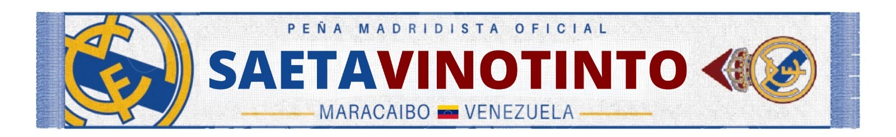

RM
Real Madrid
Próximamente
VS
Hora de Maracaibo
?
Por confirmar
Peña Madridista Oficial · Maracaibo
Madridismo sin fronteras
Peña Madridista Oficial de Maracaibo. Muchas ciudades, una misma camiseta y una pasión que siempre nos encuentra.
Nuestra historia
Somos la Peña Madridista Oficial Saeta Vinotinto: una familia nacida en Maracaibo y conectada alrededor del mundo por el Real Madrid.
Cada partido es una excusa para volver a encontrarnos. Cada victoria, un recuerdo que compartimos.
Ver ficha oficial en Real Madrid ↗Nuestra esencia
Una peña se entiende mejor cuando se vive. Dale play y conoce un poco más de nuestra historia, nuestra gente y nuestra pasión.
Nuestra gente
Detrás de cada nombre hay una historia madridista. Encuentra a quienes hacen grande esta familia.
Cargando miembros...
Nuestra comunidad global
Desde Maracaibo, Saeta Vinotinto está presente en distintos países. El mapa muestra únicamente cifras agregadas.
El próximo encuentro
Consulta los próximos compromisos y prepárate para vivirlos junto a la peña.
El calendario se confirma desde la fuente oficial del Real Madrid para evitar mostrar fechas desactualizadas.
Más que noventa minutos
Comparte la pasión, mantén tus datos al día y sigue conectado con la familia Saeta Vinotinto.
Entrar al área de socios →Producto oficial

Lleva nuestros colores contigo. La compra está reservada para socios autenticados.
Ver tienda oficial →Conoce la peña
Información esencial sobre la Peña Madridista Oficial Saeta Vinotinto.
Somos una Peña Madridista Oficial de Maracaibo, Venezuela, formada por seguidores del Real Madrid.
Sí. Saeta Vinotinto aparece en el listado oficial de peñas del Real Madrid ↗.
Es la idea que nos une: la distancia nunca limita nuestra pasión ni nuestro sentido de comunidad.